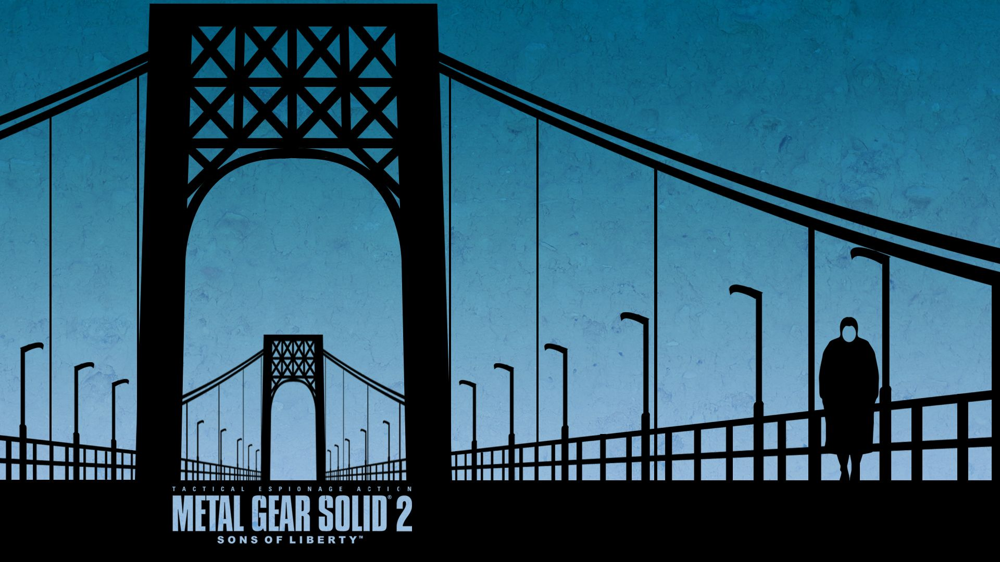

Данная часть серии вводит в сюжет ключевого персонажа по имени Raiden.
В данную часть серии сыграть на ПК можно двумя путями, но один будет хуже другого...
Первый путь: GOG
Данная игра доступна в GOG, по крайней мере была доступна до Осени 2021 года, пока у Konami не случились проблемы с лицензией игры. Сейчас можно раздобыть ключ/аккаунт на вторичном рынке, но купить в самом магазине нельзя.
Второй путь: Эмулятор PS3
В данном случае ситуация такая же как у MGS3, но тут дела обстоят хуже. Во время того, когда вы будете на открытых пространствах, игра будет замедляться. Это значит, что всё будет двигать в слоумоушене, включая вас. Единственный выход из этого - поскорее забраться в здание. Опять же стоит ознакомиться с настройками RPCS3 для данной игры на ютубе.
Для игры на ПК Вам потребуется: